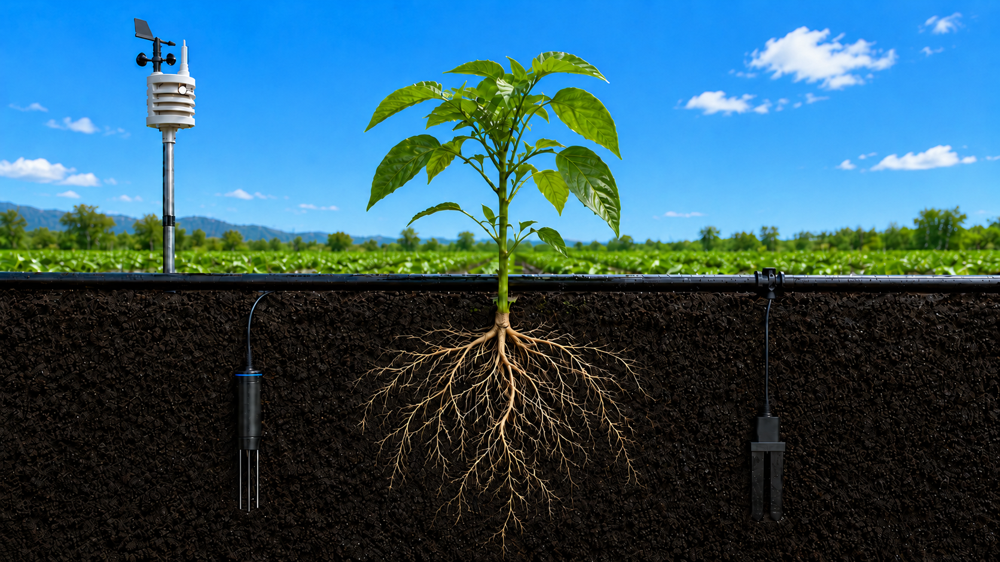

Temp. ar
25,0 °C
Ideal
Umid. ar
63,8 %
Ideal
Temp. solo
21,9 °C
Ideal
Umid. solo
35,4 %
Adequado
Dia limpo · Solo úmido
Próxima irrigação
Em 27,3h
Volume previsto
1,64 L/m²
Duração estimada
~49 min
Confiança
—
Umidade alvo
22 – 35%
Controle manual
L/m²
Modo automático
Evapotranspiração — Penman-Monteith
ETo por leitura (30 min)
0.1004 mm
ETo equivalente diário
4.819 mm/dia
Por que o sistema recomenda?
- Umidade do solo em queda progressiva
- ETo acumulada acima do limiar de déficit
- Sem previsão de chuva para as próximas 24h
- Melhor janela: período noturno (menor ETo)
Modelo de IA
Algoritmo: XGBoost MultiOutput
Features: 20 variáveis
Treino: 390 dias históricos
Pseudo-label: Penman-Monteith FAO-56
Atualizado: —
Umidade do solo — histórico 72h
Umidade do solo (%)
Faixa ideal (22–35%)
Sensores ativos
4/4
100% da rede
Intervalo leitura
30 min
Simulado
Registros hoje
48
Dataset futuro
Saúde da rede
OK
Excelente
Série temporal — temperatura e umidade (72h)
Temp. ar (°C)
Temp. solo (°C)
UR ar (%)
UR solo (%)
Leituras atuais
| Sensor | Tipo | Valor |
|---|---|---|
| S-01 | Umid. solo | — % |
| S-02 | Temp. solo | — °C |
| S-03 | Umid. ar | — % |
| S-04 | Temp. ar | — °C |
| — | ETo (30min) | — mm |
| — | ETo (diário eq.) | — mm |
Status umidade solo
Solo
—%
Ar
—%
Previsão meteorológica — CPTEC/INPE (Open-Meteo)
ETo diária estimada (72h)
Balanço hídrico
ETo 72h (acum.)
— mm
Chuva (24h acum.)
0,0 mm
Déficit hídrico
— mm
Kc estimado
0,75
Recomendação INPE
Melhor janela: período noturno
Menor ETo, maior umidade relativa e ventos mais calmos reduzem evaporação pós-irrigação.
Comparação Local × INPE
| Variável | Local (sensores) | INPE (estimado) | Diferença |
|---|---|---|---|
| Temp. média do ar (°C) | — | 24,3 | +0,7 |
| Umid. relativa média (%) | — | 67,0 | -0,7 |
| ETo média (mm/30min) | — | 0,1000 | +0,0004 |
Próxima irrigação recomendada
Em 27,3h
Volume
1,64 L/m²
Confiança
—
ETo 24h
—
Urgência
OK
Previsão: horas até irrigação (72h)
Saúde do solo
Umidade atual vs faixa ideal
Atual
—
Murcha (15%)Ideal (22–35%)Sat. (50%)
Classificação FAO-56
Adequado
Solo entre capacidade de campo e ponto de murcha permanente
Parâmetros pedológicos (argissolo)
| Cap. de campo | 35% |
| Pt. murcha perm. | 15% |
| Kc médio | 0,75 |
Alertas ativos
1
Requerem atenção
Críticos
0
Sem situação crítica
Atenção
1
Monitorar
Resolvidos
0
Últimas 24h
Alertas atuais
Histórico recente
| Hora | Tipo | Descrição | Status |
|---|
Linha do tempo
Previsão de irrigação
—
horas até o próximo evento previsto
—
Configurações do Firebase
DATABASE_URL: offline (dados embutidos)
Nó: /gemeo_digital
Modo: OFFLINE
Última atualização: —
Registros em buffer: —
Para conectar ao Firebase, edite firebase_writer.py com sua DATABASE_URL e rode:
python firebase_writer.py --rapido 2
O dashboard detecta o Firebase automaticamente e atualiza em tempo real.